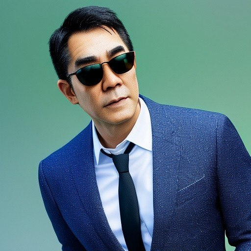

Business Weekly · Succession
企業接班人之
「分歧者」
從單一專業走向跨部門全局觀：企業第二曲線真正需要的人才。
本版使用 Jason 提供的授權聲音樣本，以本機 F5-TTS 製作 AI 語音導覽，非真人現場錄音。

賴志達・新物種 Biz01 / 08
先定義分歧者不是反對者，而是能跨越組織邊界解決問題的人。
The succession gap
分工越成熟，全貌越難看見
草創期
資源有限，老闆哪裡痛就學哪裡，設計、文案、廣告與財務都得面對。
成熟期
部門分工變細、專業變深，員工更容易只在自己的職能裡成長。
但接班人不能只懂一個部門，他必須理解整間公司的因果關係。
看見全貌02 / 08
Who is divergent?
分歧者的四種特質
有根基
先在一個專業站穩，再向外理解其他職能。
跨邊界
不把問題推回原部門，願意理解不同語言。
解問題
不受派別限制，選擇最適合公司的方案。
敢學習
面對陌生領域，不害怕重新成為初學者。
善溝通
能把不同部門拉到同一個問題上合作。
有韌性
擇善固執，遇到困難仍把事情做完。
跨域不是沒有專業03 / 08
From trouble to capability
麻煩，是最好的跨域教室
流程卡住看見跨部門的真實問題
→
主動學習理解採購、資訊、營業、財務
→
協作解題用溝通把方案推進
→
形成全局觀成為跨部門管理者
Learning by solving04 / 08
The organizational paradox
公司要創新，卻常打壓挑戰者
分歧者會挑戰傳統、挑戰 SOP；短期看似動盪，長期可能正是企業的第二曲線。
只獎勵服從
留下最會維持現狀的人，也失去看見新路的人。
給發揮與容錯
解決問題的過程，本身就是最好的接班訓練。
不要太早設限05 / 08
Divergence with accountability
挑戰規則，也要承擔結果
更好方案
不只指出問題，也提出可執行的替代方法。
帶動合作
能讓不同部門一起成功，而非只證明自己。
結果責任
保留決策證據、驗證成果，也誠實復盤失敗。
Freedom with evidence06 / 08
Succession design
接班人不是輪調，
而是真實任務
選人找主動處理跨部門問題的人
→
授權給真實資料、範圍與決策空間
→
容錯允許試驗，但明訂風險邊界
→
驗收用成果、協作與復盤判斷
培養全局判斷07 / 08
Final thought
接班人，不是最像
現任老闆的人
而是能穿越組織分工、挑戰過時規則，又能把改變轉化成可驗證成果的人。
請給分歧者發揮、容錯的機會和時間。
End08 / 08